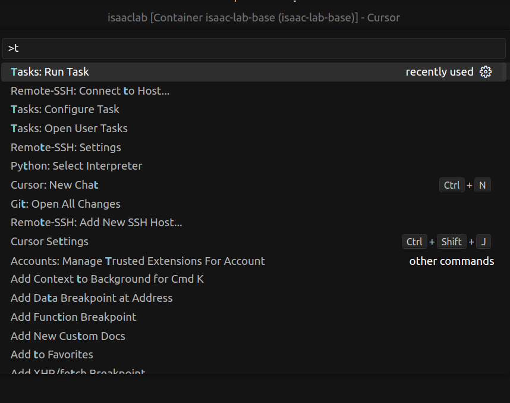
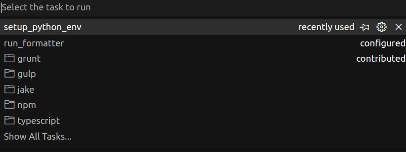
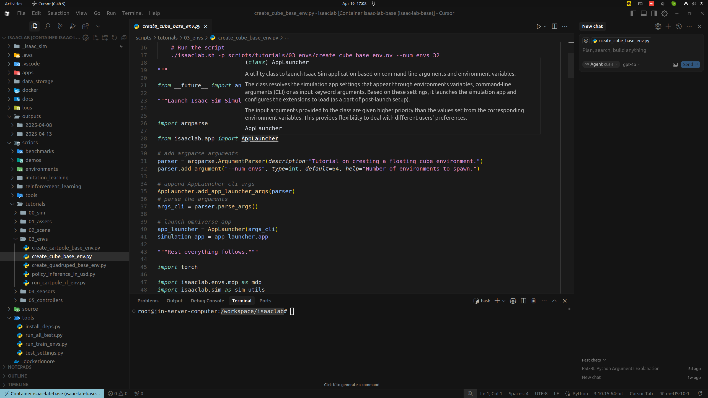

[IsaacLab] 02. 개발 세팅 및 예제 실행
이 문서에서는 vscode에서 개발을 진행하기 위한 환경 설정 방법과, 강화학습 예제를 실행하는 방법을 설명합니다.
사전 준비사항
vscode 환경 설정
Container 내부 환경으로 접속하기

vscode image 이때, Root directory가
/workspace/isaaclab이 되어야합니다. (.vscode의 task를 수행해야하기 때문)Task 실행 
ctrl+shift+P단축키를 통하여 명령어 창을 켠 후,Tasks: Run Task를 수행합니다.  setup_python_env를 실행하면, 파이썬 라이브러리에 대한 환경변수들을 자동으로 설정해줍니다. 이를 통해 개발의 편의성을 높일 수 있습니다.

예를 들어 위 이미지와 같이 AppLauncher class 등에 대해서 바로 접근이 가능하여, 어떠한 역할을 하는 것인지, 또한 그 내부로 바로 접근이 가능하다는 등의 장점등이 있습니다.
2. IsaacLab 예제
Go1 로봇 학습 예제
학습 시:
python scripts/reinforcement_learning/rsl_rl/train.py --task=Isaac-Velocity-Rough-Unitree-Go1-v0 --video학습 중인, 내용들은
logs/{알고리즘}/{env}/{timestamp}/에 저장됩니다. 이때 video 인자등을 추가하면 중간중간 학습 진행사항을 확인하기 좋습니다.실행 시:
python scripts/reinforcement_learning/rsl_rl/play.py --task=Isaac-Velocity-Rough-Unitree-Go1-Play-v0 --num_envs 20기본적인 인자 설명들
- –video: 훈련 중 비디오를 녹화할지 여부를 결정합니다. 이 인자를 사용하면 비디오 녹화가 활성화됩니다.
- –video_length: 녹화할 비디오의 길이를 스텝 단위로 지정합니다. 기본값은 200입니다.
- –video_interval: 비디오 녹화 간의 간격을 스텝 단위로 지정합니다. 기본값은 2000입니다.
- –num_envs: 시뮬레이션할 환경의 수를 지정합니다.
- –task: 수행할 작업의 이름을 지정합니다.
- –seed: 환경에 사용할 시드 값을 지정합니다.
- –max_iterations: 강화 학습 정책 훈련의 최대 반복 횟수를 지정합니다.
학습 중, webrtc로 붙어서 확인을 하는 것은 권장하지 않습니다. 한번 gui를 연결하고 나면, 학습 속도가 매우 느려질 뿐 아니라, 접속을 끊었을 때 학습에 오류가 생기며 server 프로그램이 종료됩니다.
사용 가능한 환경 리스트
아래 명령어를 통하여, 현재 사용가능한 환경들에 대해서 확인할 수 있습니다. 좀더 친절한 가이드는 여기에 있습니다.
./isaaclab.sh -p scripts/environments/list_envs.py